Auf dem Rheinradweg von Bühl bis Konstanz und dann einmal um den Bodensee
Vorbereitung
Die Tochter ist für dieses Jahr bei einem einwöchigen Musikevent
nahe Karlsruhe einquartiert. Also haben wir eine Woche Zeit für eine
Radtour.
Kurz auf die Karte geschaut und nach wenig Höhenmetern gesucht. Da
fällt einem dann der Rhein ins Auge. Daran anschließssend der
Bodensee. Von den Kilometern her sollte es auch passen. Wo soll das Auto
stehen? Freunde wohnen in Bühl und sind zu dem Zeitpunkt auch im
Urlaub. Also steht deren Auffahrt zur Verfügung. Wo kann man nahe
Bühl übernachten. Der Campingplatz am Achernsee ist die nächste
Möglichkeit. Jetzt noch schnell den GPS Track vom Rhein- und
Bodenseeradweg herunterladen und schon steht die Reise.
Als Zelte kommen das kleine Salewa und das kleine Vaude Zelt mit. Ein
Trangia Kocher wird für drei Personen schon reichen.
21.08.2025 - 14km - Bühl - Achernsee
Schlafen neben der Autobahn
Nachdem die Tochter in Karlsruhe am Hauptbahnhof übergeben wurde, machen
wir uns zu Dritt per Auto auf nach Bühl. Dort parken wir das Auto
und laden die Räder vom Dach. Schnell sind die Packtaschen befestigt und
Locus Pro gestartet, um auf direktem Weg zum Campingplatz am Achernsee zu
kommen.
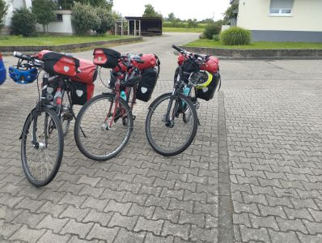
Start
14 Kilometer später sind wir da.
Wir testen noch kurz die Badewasserqualität
des Sees und gehen dann ins Restaurant auf dem Platz. Leider liegt die
Zeltwiese genau hinter der Schallschutzwand zur A5. Aber trotz der
Geräschkulisse schlafen wir recht gut.
22.08.2025 - 132km - Achernsee - Breisach
Fast verdurstet
Um 8:30 verlassen wir den Platz und fahren nach Rheinau, um dort zu
frühstücken. Wir hatten ein paar Orientierungsprobleme, um
den korrekten Weg zum Rhein zu finden. Es ist uns dann aber doch gelungen,
und so erreichen wie am örtlichen Yachtclub endlich den Rhein.
Interessant zu sehen, wie hoch der Rhein durch den Deich über der
Landschaft liegt. Statt Asphalt bestimmt nun Schotter unseren weiteren
Weg. Es lässt sich aber gut fahren.
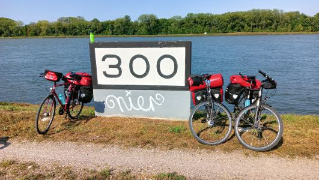
Rheinkilometer 300
Beim Trekkingrad des Sohnes wackelt der Gepäckträger und
die Frau hat am Hinterrad zu wenig Luft. In Kehl am Marktplatz fixen wir
beide Probleme mit unserem Bordwerkzeug. Als das erledigt ist, sehen wir
keine 40 Meter weiter eine Fahrradreparaturstation. Es ist wie immer.
Das Wetter ist gut, und wir sind noch frisch, also schaffen wir es heute
bequem bis nach Breisach. An einer Stelle sehen wir plötzlich hinter
einem Acker eine Loopingachterbahn. Wer baut denn so etwas hier im
Nirgendwo. Der Blick auf die Karte klärt uns dann auf: Es ist der
Europapark Rust. Nachdem wir an einer Satellitenstation des BNDs vorbei
fahren, wird es wieder einsamer.
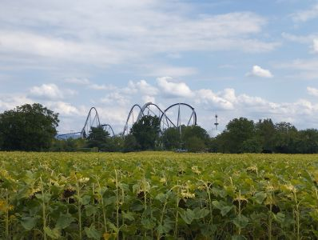
Europapark Rust
Dummerweise geht uns so langsam das Trinkwasser aus, und ein kleiner
Umweg durch eine Ortschaft hilft uns auch nicht weiter. Niemand ist
draußen zu sehen. Kein Brunnen am Marktplatz, kein Lebensmittelladen,
keine Kneipe. Alles zu, bzw. nicht vorhanden.
Als wir bei Weisweil wieder auf den Rheindeich kommen, liegt rechter
Hand ein stark frequentierter Kiosk mit einem Kühlschrank
eiskalter Getränke. Eine Schorle trinken wir vor Ort. Ein
Mineralwasser landet in unseren Trinkflaschen. Zumindest wissen wir
nun, daß 4 Liter Wasser für drei Personen nicht ausreichen.
Hinter Breisach im Ortsteil Hochstetten
fahren wir auf den Campingplatz Münsterblick, checken dort ein,
hängen unsere Powerbanks im Gemeinschaftsraum an die Steckdose
und bauen die Zelte auf.
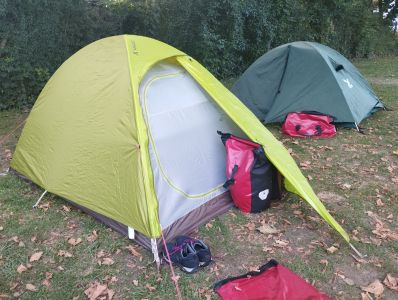
Die Zelte stehen
Fürs Abendessen radeln wir zurück nach Breisach, kaufen
noch zwei Flaschen Wasser, und dort gibt es Flammkuchen zum
Abendbrot.
23.08.2025 - 106km - Breisach - Bad Säckingen
Zwischen A5 und Rhein bis Basel
Wir verlassen den Campingplatz gegen 9:20Uhr und schlagen uns zum Rhein
durch. Die Strecke auf dem Schotterweg ist recht monoton. In Hartheim
passieren wir ein Dammwildgehege. Es geht an
zwei großen Überflutungsbecken vorbei und am Rheingarten Neuenburg
müssen wir wegen eines Festivals einen Umweg fahren. Dann wird es
relativ schmal. Der Radweg verläft nun unmittelbar neben der A5, und
der Rhein liegt direkt rechts neben uns.
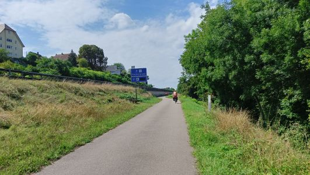
Autobahn, Radweg, Rhein
Nach einiger Zeit erreichen wir Weil am Rhein wo wir etwas fürs
Mittagessen suchen. Nach erfolgloser Suche landen wir beim Alex. Nebenan
im Einkaufszentrum holen wir uns noch ein paar Snacks für
den weiteren Weg.
Dass wir die Grenze zur Schweiz überqueren, bekommen wir nicht so
richtig mit. Wir müssen zu sehr auf den Verkehr in Basel aufpassen.
Neben den Straßenbahnschienen versuchen wir mit dem Verkehr
mitzuschwimmen.
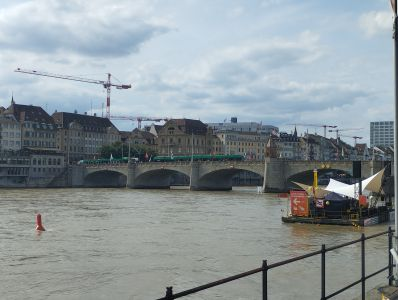
Basel
Als wir wieder das Rheinufer erreichen, wird es besser. An einer Baustelle
hilft uns ein Einheimischer für die nächsten 5km weiter und
begleitet uns. Kaum sind wir etwas vom Rhein entfernt, wird es hügeliger
Wir entscheiden uns, in Bad Säckingen auf den Hofcamping Isele-Hof
zu übernachten. Der Besitzer ist nicht da, aber nach einiger Zeit
können wir bei seinem Sohn unsere Übernachtung bezahlen. Der
Preis überrascht uns ein wenig. 5 Euro fürs Zelt und 2,50 Euro
pro Person. Dusche frei, W-LAN und eine Steckdose zum Aufladen der
Geräte direkt an der Zeltwiese.
Die Pizzeria im Ort hat Ferien, aber das Restaurant am Markplatz hat
eine hervorragende Küche. Gesättigt fallen wir in den
Schlafsack.
24.08.2025 - 79km - Bad Säckingen - Schaffhausen
Smartphone im Bootloop
Heute wird in mehrfacher Sicht ein harter Tag. Morgens macht das
Smartphone des Sohnes Probleme. Es startet nicht mehr, sondern startet
dauernd neu. Um zu testen, ob es ein Hardwareproblem ist oder an einer der
zuletzt installierten Apps liegt, bringen wir es ins Bootmenü und über
den Menüpunkt "Wipe Data" in den Ursprungszustand. Es bootet wieder
normal. Problem ist allerdings, dass alle Apps weg sind. Wir sind leider
nicht in Reichweite eines WLANs und nördlich des Rheins auf
deutscher Seite trotzdem dauernd im Schweizer Netz eingebucht. Die Schweiz
gehört mobilfunktechnisch nicht zu Europa und daher ist das Telefon
erst einmal nutzlos. Der Download aller Apps würde das Prepaid
Guthaben sprengen. Zudem kommt noch der Umstand, dass das Kind sein
Google Passwort vergessen hat. Zurücksetzen lässt es sich
nur mit Hilfe eines weiteren Telefons, bzw. seiner SIM. Technologischer
Deadlock. Das Kind wird heute während des Fahrens keinen Podcast
hören können. Entsprechend ist die Laune.
Die Navigation obliegt also heute den Eltern. Das ist aber nicht schwer:
der Weg ist gut ausgeschildert und der Rhein immer in der Nähe.
Das Problem heute sind eher die Höhenmeter. Bis Herdern ist noch
alles OK. Wir kommen immer wieder dicht an den Rhein heran. Dann
geht es in die Schweiz, und ab Günzgen f¨rt uns der Radweg aber
über Hüntwangen, Wil, Rafz, Lottstetten abseits des Rheins
über reichlich Höhenmeter mit einigen Schiebestrecken.
Zwischen Rafz und Lottstetten sind wir wieder in Deutschland, bei
Nohl aber schon wieder in der Schweiz.
Zwischendrin kollidiere ich mit einer Wespe. Sie fliegt mir in den
Mund. Ich kaue auf ihr rum und sie sticht mich in die Unterlippe.
Kurz danach erreichen wir den Rheinfall. Wir machen dort eine Eis- und
Colapause.
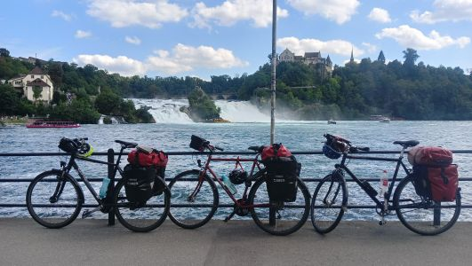
Am Rheinfall
Wir schieben die Räder eine steile Rampe hoch und fahren zum
Campingplatz Schaffhausen, der auf der Schweizer Flußseite
liegt. Dort bauen wir die Zelte auf und duschen erst einmal. Der
Campingplatz hat WLAN. So können wir das Smartphone des Kindes
wieder neu aufsetzen. Es funktioniert und eine Person ist
überglücklich.
25.08.2025 - 97km - Schaffhausen - Altenrhein
Rennstrecke am Seeufer
Wir starten gegen 9 Uhr. Das Wetter ist anhaltend sonnig, warm und
vor allen Dingen trocken. Die Regensachen haben wir bisher umsonst
mitgeschleppt.
Wir müssen erst ein Stück zurüch nach Schaffhausen, um
wieder auf die nördliche Flußseite zu kommen. Kurze Zeit
später sehen wir unseren Campingplatz auf der anderen Seite.
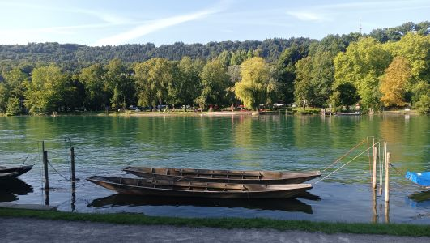
Campingplatz Schaffhausen
Wir fahren über Büsingen, Bailingen, Hemishof bis nach Stein
am Rhein. Hier müssen wir uns an der Rheinbrücke entscheiden.
Im oder gegen den Uhrzeigersinn um den Bodensee. Wir wollen nach Konstanz
und entscheiden uns damit gegen den Uhrzeigersinn.
Zur Mittagszeit erreichen wir Konstanz und überlegen, wie weit wir
wohl noch kommen. Der Radweg führt dicht am See entlang, und daher
ist die Route recht flach. Hier kann man Gas geben. Wenn es nicht so
viele andere Radfahrer gäbe. Man merkt deutlich, dass der
Bodenseeradweg sehr beliebt ist.
Wir rollen durch Romanshorn, Arbon, Rorschach und Altenrhein bis zum
Campingplatz Idyll. Hier können wir duschen, Akkus aufladen
und ein Bierchen gibt es auch. Zum Abendessen gibt es Ramennudeln mit
Tofu. Danach haben wir noch mit Gummibärchen Mensch ärgere
Dich nicht gespielt Wir sind hier noch so gerade in der
Schweiz. Das andere Ufer vom Alten Rhein ist schon Österreich.
26.08.2025 - 90km - Altenrhein - Birnau
Flachetappe
Kurz nach dem Start vom Campingplatz verlassen wir endgültig die
Schweiz und gelangen nach Österreich bei Gaißau. Bei
Fußach überqueren wir den Rheinzufluß und kurz vor
Bregenz die Bregenzer Ach.
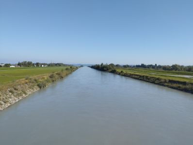
Rheinzufluss in den Bodensee
Von Bregenz bis Lindau ist der Radweg
eine super glatt asphaltierte Rennstrecke. Es ist aber auch entsprechend
voll. Wir rasen im Pulk bis Lindau am Park-Camping Lindau erreichen
wir Deutschland. In Lindau machen wir auf der Insel Mittagsrast und suchen
Schatten.
In Friedrichshafen legen wir eine weitere Rast ein und suchen derweil
einen Campingplatz aus. Der bevorzugte Platz liegt zwischen
Oberuhldingen und Untermaurach. Es ist der Campingplatz Birnau-Maurach.
Als wir ankommen, steht direkt am Radweg ein Schild, dass der Platz
ausgebucht ist. Wir wollen schon weiter fahren, aber an der Rezeption
hat man dann doch noch einen Platz für zwei Zelte.
Nachdem die Zelte stehen, gehen wir zum See, um zu baden. Gar nicht so
einfach. Man watet durch gefühlt 30cm Schlick und knietiefes Wasser.
Es dauert ewig, bis man sich traut, die ersten Schwimmzüge zu
machen. Außerdem ist das Wasser ziemlich warm. Nach dem Bad
duschen wir erst einmal und gehen dann ins Campingplatzrestaurant.
27.08.2025 - 61km - Birnau - Konstanz
Trotz See ein paar Höhenmeter
Wir starten morgens am Campingplatz. Unser heutiges Tagesziel ist
Konstanz, womit wir den Bodensee einmal umrundet haben. In
Nußdorf stärken wir uns für den Tag und fahren durch
Überlingen, Sipplingen, Ludwigshafen, Bodman, Stahringen
und Güttingen nach Radolfzell. In Radolfzell finden wir eine
Eisdiele.
Über Allensbach fahren wir nach Staad nördlich von
Konstanz zum Campingplatz Bruderhofer, wo wir bereits um 14:30Uhr ankommen.
Die Rezeption macht gerade auf und weist uns einen Platz zu.
Für den Abend ist Regen und Gewitter vorhergesagt. Wir fahren
noch nach Staad und finden dort am Hafen ein nettes Fischbistro.
28.08.2025 - 10km - Konstanz - Bühl
Per Bahn von Konstanz zurück zum Auto
Nachts beginnt es dann tatsächlich zu regnen, und wir müssen
die Zelte morgens naß abbauen.
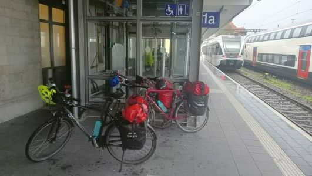
Konstanz im Regen
Es sind 5 Kilometer zum Bahnhof nach Konstanz. Wir nehmen per
Länderticket den Zug nach Karlsruhe, den wir in Bühl
verlassen. Wir profitieren davon, dass man in Baden-Würtemberg
die Fahrräder kostenlos in der Bahn mitnehmen kann. Leider wird
es dadurch im Laufe der Fahrt relativ voll im Fahrradabteil, so daß
der Ausstieg in Bühl mit 3 Rädern und Gepäck eine
Herausforderung wird.
Vom Bahnhof Bühl sind es noch 5 Kilometer zu unserem Auto.
Die Sachen sind schnell verstaut und die Räder auf dem Dach
montiert.
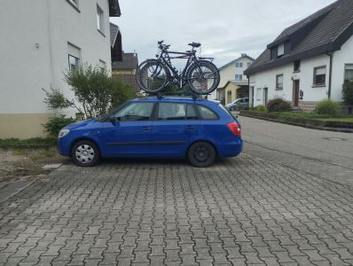
Ende
Damit ist die diesjährige mehrtägige Radtour zu Ende.
Links:
Campingplatz am Achernsee
Münsterblick Camping Breisach
Hofcamping Isele Hof
Campingplatz Schaffhausen
Campingplatz Altenrhein
Campingplatz Birnau-Maurach
Campingplatz Konstanz
|